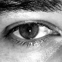

| DJ Foot | DJ Eye |
|---|---|
|  | |
| Kétszeres DMC bajnok, legutóbb 2005-ben nyerte el a "legjobb DJ" díjat freestyle kategóriában. Számos zenekarral dolgozott már együtt, és most tudását másokkal is szeretné megosztani. | Az angol születésű John Foot már 7 éve él hazánkban. Elismert DJ és rádiós személyiség, a DJ Suli alapítója. Angliában 3 évig volt a Radio-1 munkatársa, ekkor fogant meg benne az ötlet, hogy alapít egy iskolát, amely magas szinten oktatja a lemezzsonglőrködést. |